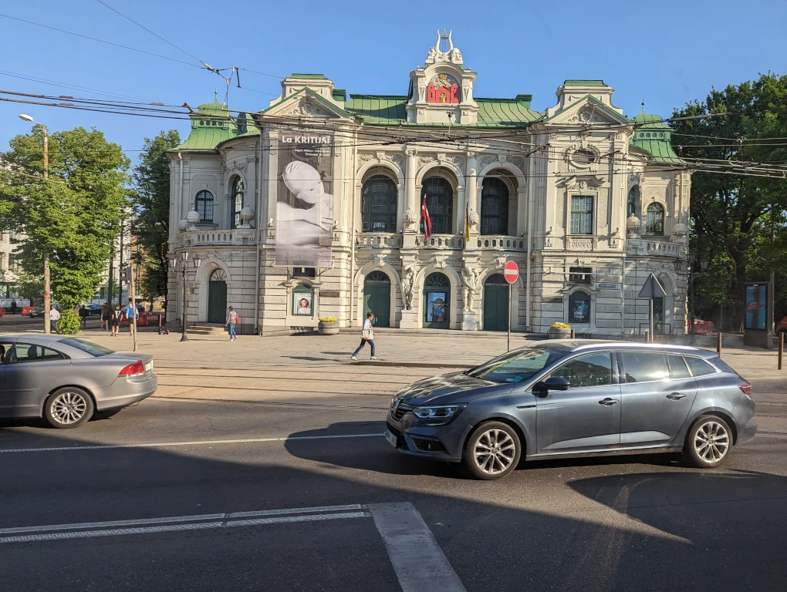

Dienās, kad ir nepieciešams braukt ar sabiedrisko transportu līdz Latvijas Universitātei, es sāku no attēlā redzamās pieturas Botāniskais dārzs. No šīs pieturas izbrauc 37. un 41. autobuss, kas aizved mani līdz pieturai Esplanāde.
Kaut gan tuvumā ir arī 25. trolejbusa pietura Dārza iela, tas nav tik piemērots, jo aizvedīs mani pa garāku maršrutu un aizņems mazliet vairāk laiku.
Pašā autobusā dažās reizēs ir tukšs, tāpēc varu apsēsties kādā sēdvietā, bet citās dienās ir samērā pilns.
Vienā saulainā dienā paspēju caur autobusa logu nobildēt Latvijas Nacionālo teātri.
Es pats neesmu nekāds tēatra mīlis, taču esmu vairākas reizes apmeklējis to vai nu ar vecākiem, lai paskatītos kādu izrādi, kas viņai interesētu, vai arī vidusskolā ar klasi, ko parasti apmaksāja skola vai kāds fonds speciāli skolām dots.
Vismīļākais skats man tomēr ir, kad es izkāpju pieturā Esplenāde un, ejot uz universitāti, redzu Brīvības pieminekli. Gandrīz katru dienu paeju tam garām, lai tas man atgādinātu par brīnišķīgo brīvību, kuru mēs visi vai nu priekos vai arī dažreiz bēdās baudām.
Viena ļoti prieka pilna diena bija 2023. gada 29. maijs, kad es biju gājis agri no rīta tam garām, pašam vēl nezinot, ka šeit sveiks hokejistus par iegūto bronzas medaļu 2023. gada Pasaules čempionātā hokejā. Tikai mazliet vēlāk pa dienu, kad klausījos jau lekciju, par to uzzināju un vēlāk pats aizgāju apskatīt to. Ļoti liels pūlis sanāca, tāpēc nevarēja labi redzēt, taču tomēr bija interesanti.